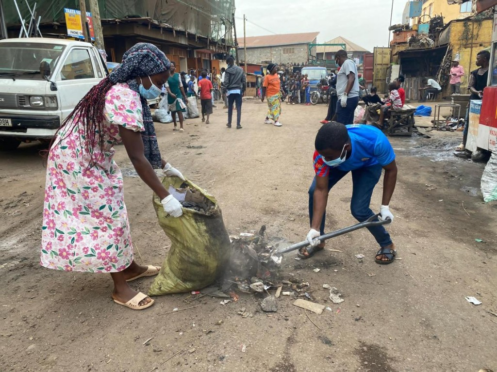

Illegal dumping
Uncollected heaps dumped overnight along Gayaza Road, Kyebando Ring Road, or vacant plots outside staging hours.
HOME / ISSUE REPORTING
Lightweight text reporting for illegal dumping, blocked drainage channels, and missed truck pick-ups—no photos or user accounts required.
01 / Reporting Guidance
Uncollected heaps dumped overnight along Gayaza Road, Kyebando Ring Road, or vacant plots outside staging hours.
Plastics, silt, or sacks clogging Nsooba Channel culverts or neighborhood stormwater drains.
When a scheduled KCCA truck or concessionaire fails to arrive within 60 minutes of its confirmed window.


02 / Text Reporting Form
Works on low mobile data—no account or photo upload needed. Fill in the details below and submit.
Submission information: Online submissions work after the site is deployed and Netlify Forms is enabled. Until live delivery and email notifications are configured, contact the project team at kyebandoclean@gmail.com. Do not assume this form alerts KCCA or LC1 automatically.
03 / Other Contacts & Next Steps
After Netlify Forms and notification rules are activated, submitted reports can be reviewed by the project team. For urgent issues or official follow-up, contact the relevant LC1 or KCCA office directly. Do not assume an online report has been received by local authorities until they acknowledge it.
| Office / Desk | Coverage | Direct Contact |
|---|---|---|
| KCCA Toll-Free Customer Care | City-wide missed trucks, illegal dumping & emergency drainage | 0800 299 000 · kcca.go.ug ↗ |
| Kawempe Division Solid Waste Desk | Kawempe Division & Kyebando Parish route supervision | +256 414 560 210 |
| Kyebando Central Zone LC1 Office | Central Zone, Ring Road & Kisalosalo local mediation | +256 772 518 304 |
| Kyebando Katale & Nsooba LC1 Sanitation Desk | Katale Market, Nsooba Channel & Erisa Road sanitation | +256 701 634 912 |